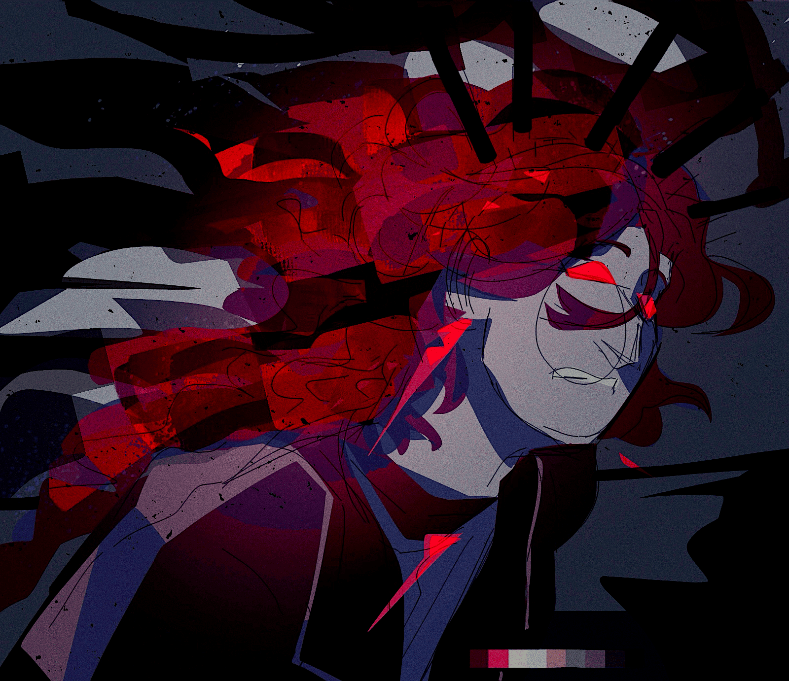

assortment of otis doodles
creation date: july 13
characters featured: otis
otis design explorations yayyy
top image is from the a concept i’ve had in my head for a long while: during moments of extreme emotion (usually anger), his hair will turn into flames, emitting a rly thick black sparkly smoke. the intent was for his horns to resemble chimneys too but it didn’t come across right.
bottom ones are more miscellaneous explorations. wanted to try incorporating some dragony(?) imagery with him, not really going into it intending for anything to stick, just testing my ideas. decided in the end a lot of it is non-canon.


the claws and arm scales look nice but wouldn't rly work since he has to wear gloves in canon. i like the idea a LOT though, maybe i'll change my mind about it. the stuff on his back and chest IS in the story thou, they're an "infection" from when he was stabbed with what was essentially a battery. the horns are a part of it, actually.

hehe